A running record of what we've actually found while poking at these embeddings —
in the order we found it, including the parts that didn't work cleanly. See the
formal research paper for the peer-review-style write-up of the
core findings, or the repo
for the full code behind each entry.
Aug 2026
Pipeline built & validated against real land cover
725 Sentinel-2 chips across the Boulder–Denver Front Range, each encoded by
Clay v1.5
into a 1024-dim vector, then checked against ground truth rather than taken on faith.
82.3%
variance in top-3 PCA components
0.275
Adjusted Rand Index vs. ESA WorldCover
725 / 725
chips matched to a WorldCover class
The dominant PCA axis (PC1, 59.4% of variance alone) turned out to track human
development rather than vegetation cleanly — negatively correlated with NDVI
(−0.55), positively with NDBI/built-up-ness (0.61). Unsupervised KMeans clusters
lined up with real ESA WorldCover land cover well above chance: one cluster came out
almost entirely “Built-up,” another almost entirely “Tree cover,”
while cropland and grassland — spectrally similar in a single snapshot —
bled across several clusters instead of separating cleanly.
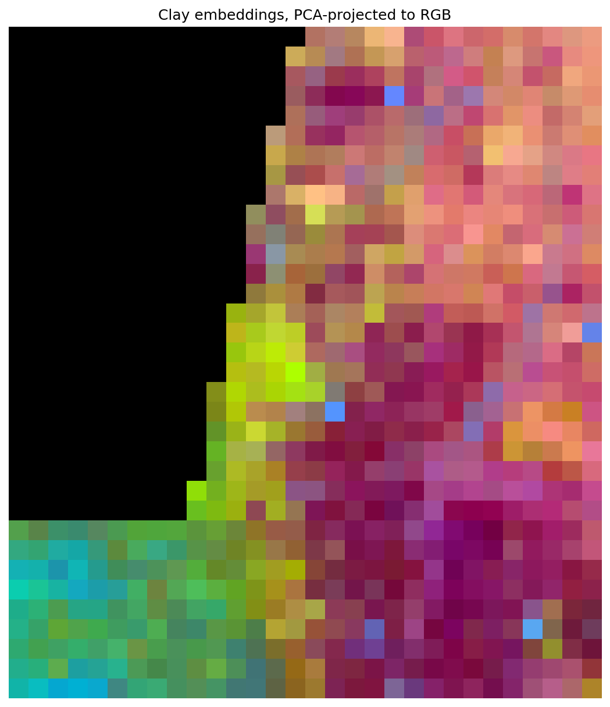
Every chip colored by its embedding's PCA projection, zero supervision. The colors on the live map's default view.
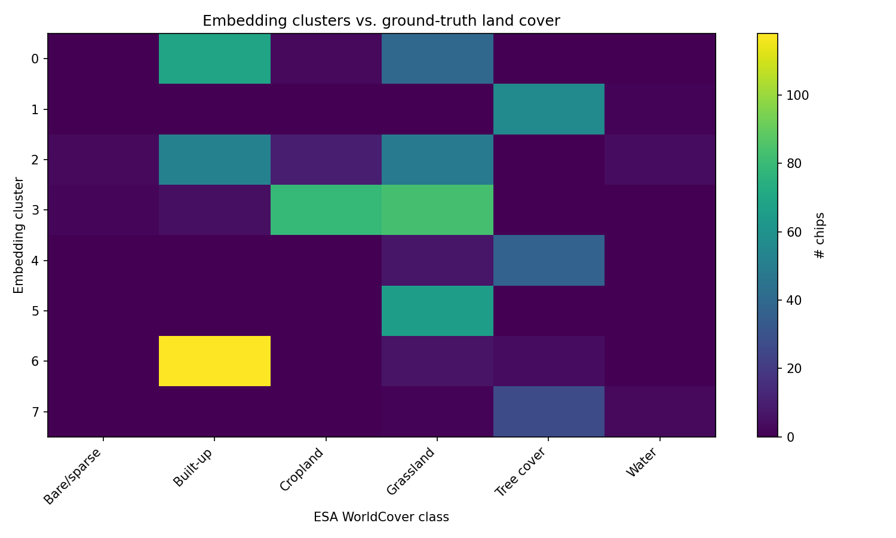
Where the unsupervised clusters agree cleanly with real land cover (Built-up, Tree cover) and where they don't (Cropland/Grassland).
Honest loose end: querying the chip nearest the Marshall Fire burn scar
(Superior/Louisville, Dec 2021) didn't return visually “burned” neighbors —
just generic suburban/grassland edge. By the 2024 imagery used here the scar is ~2.5
years regrown, so this doesn't confirm or rule out whether Clay retains a burn signature
that long. That's the seed for a proper before/after comparison later in this log.
Aug 2026
Embedding arithmetic: urban − vegetation + water
The classic word2vec trick (king − man + woman ≈ queen) applied to
satellite chips, to test something stronger than “these chips cluster
together”: is the embedding space linearly structured, such that concepts
can be added and subtracted like vectors? Runs entirely against the embeddings already
committed in docs/data/ — no Colab, no GPU, just
analysis/embedding_arithmetic.js.
Concept anchors were built from what the previous entry already validated: urban
= mean embedding of the ~pure “Built-up” cluster, vegetation = mean
embedding of the ~pure “Tree cover” cluster, water = the single chip
nearest Boulder Reservoir (water chips are too sparse here to form their own cluster).
0.951
top-1 cosine similarity to the result vector
0.828
mean similarity across all other chips (baseline)
The top result is meaningfully above the baseline, not just close to everything —
the arithmetic is doing something real. The closest chips (mostly from a cluster that
WorldCover confirms is a Built-up/Grassland mix, not the pure “Built-up”
cluster used as the urban anchor) sit at moderate NDVI (~0.16–0.22), scattered
across the eastern plains near Denver. Read as a sentence: “urban character,
minus the forest influence, plus a water-adjacent quality” lands on
development-in-open-grassland-near-water — not dense downtown, not forest, which is
exactly the kind of place that description fits on this actual landscape (the Front
Range's development sprawls into prairie to the east, not into the forested foothills to
the west).
Aug 2026
Does terrain leak into the embeddings?
Clay never receives elevation, slope, or any terrain data as input — only 10
Sentinel-2 reflectance bands plus wavelength/time/location metadata. The Front Range spans
roughly 1,800 meters of relief across the AOI, so if any embedding axis tracks elevation
anyway, that's the model inferring terrain from spectral and textural cues alone. Fetched
USGS 3DEP
elevation for all 725 chips and checked it against the embeddings, extending the PCA
correlation check past the top 3 components examined in the first entry out to 10.
−0.82
PC1 ↔ elevation (r), vs. −0.55 for NDVI
−0.73
PC4 ↔ NDVI (r), on only 6.2% of variance
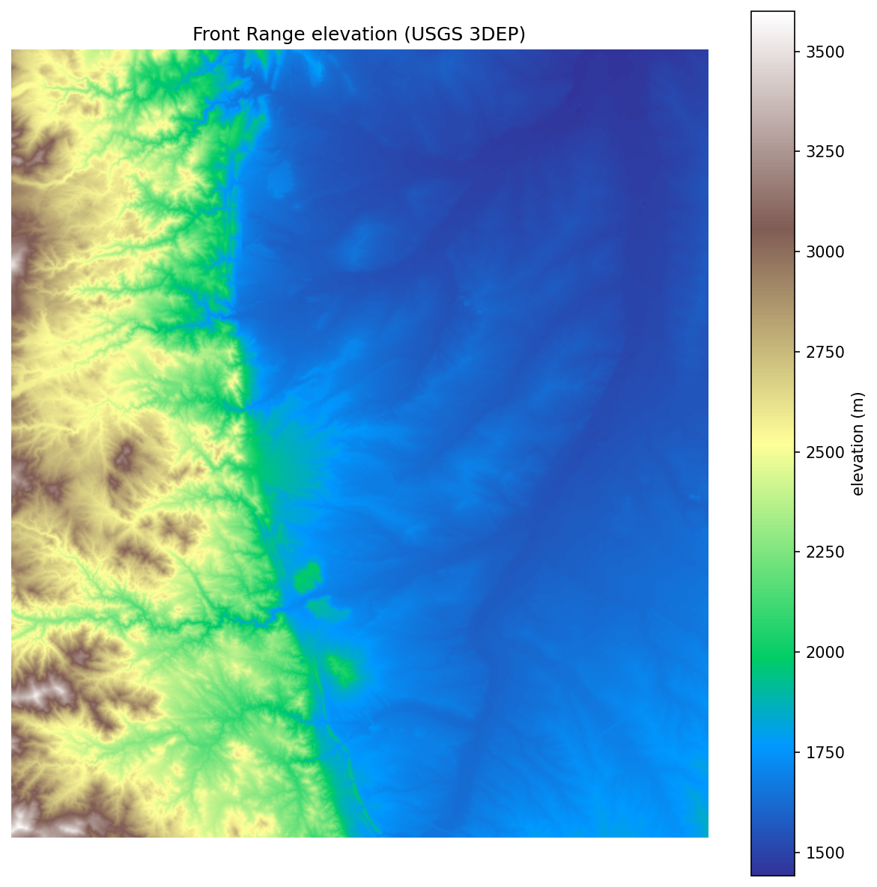
Elevation across the AOI (USGS 3DEP): plains around 1,500–1,700m to the east, foothills climbing past 3,000m along the west edge — the actual Rocky Mountain Front Range escarpment is the sharp diagonal boundary.
PC1 — the same axis the first entry called a “human development” axis
because it correlated with NDBI (0.61) and NDVI (−0.55) — turns out to
correlate with raw elevation more strongly than with either spectral index
(r = −0.82). That reframes the earlier read: PC1 may be more fundamentally a
terrain axis, with vegetation and built-up-ness riding along as downstream
correlates, because on this specific landscape elevation, land cover, and development are
all confounded with each other (mountains are forested and undeveloped, plains are dry and
built up). This can't be fully disentangled without a landscape where elevation and land
cover vary independently of each other — a real limitation of a single-AOI study, not
a caveat to bury.
Two more specific catches came out of extending past the top 3 components. PC2 correlates
with slope (r = 0.48) more than with elevation (r = 0.43), and barely at all with
NDVI (r = −0.05) — while still being the component most tied to NDBI (0.66)
from the first entry. One plausible read: PC2 tracks development specifically on sloped,
foothill-adjacent terrain (canyon-mouth towns like Golden, Boulder's mountain fringe),
distinct from PC1's broader plains-vs-mountains axis. More strikingly, PC4 —
responsible for only 6.2% of variance, easy to ignore — correlates with NDVI at
r = −0.73, a cleaner vegetation signal than PC1's −0.55 and nearly uncorrelated
with elevation or slope. The dominant component isn't always the most interpretable one.
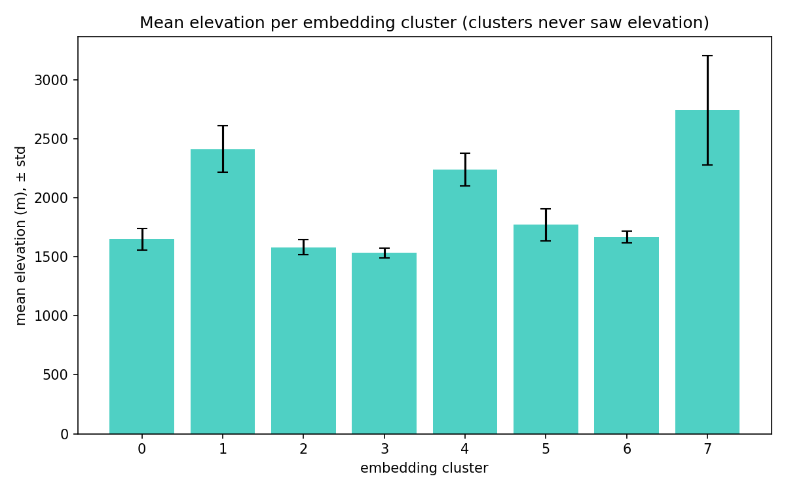
Mean elevation per k-means cluster (clusters were built with zero elevation information). The three forest-dominant clusters from the first entry (1, 4, 7) sit at 2,241–2,742m; the five built-up/cropland/grassland-dominant clusters (0, 2, 3, 5, 6) sit at 1,533–1,772m — a clean, independently-confirmed split.
Aug 2026
Does Clay actually detect the Marshall Fire? (Took three tries to ask cleanly.)
The first entry's nearest-neighbor query aimed at the burn scar was inconclusive —
it used one snapshot from mid-2024, ~2.5 years after the fire, no baseline. This was meant
to be the fix: fetch a real pre-fire and post-fire pair, compute dNBR (a standard,
independent burn-severity index) from the raw bands as ground truth, embed both dates with
Clay, and check whether embedding movement actually tracks how severely each chip burned.
Getting a clean pair of dates took two failed attempts first, both worth stating plainly
rather than editing out.
Attempt 1 searched a wide pre-fire window (Sept–Dec 2021) for the
least-cloudy scene and got Sept 25 — three months before the fire. Compared against
an April 2022 post-fire scene, that's late-summer-green versus early-spring-dormant
vegetation, a seasonal swing large enough to swamp any real burn signal. It showed up
exactly as you'd expect: dNBR elevated almost uniformly across the entire AOI
rather than concentrated at the actual burn perimeter.
Attempt 2 narrowed the window to December 2021 pre-fire, but the
resulting "least cloudy" February 2022 scene turned out to have obvious patchy snow
visible in the true-color check — `eo:cloud_cover` metadata doesn't account for snow
at all, so a metadata-only search can't catch it. The real fix
(select_clearest_scene())
reads each candidate's actual Scene Classification Layer band over the specific AOI and
picks whichever has the lowest real cloud+snow pixel fraction, not the scene-wide metadata
number.
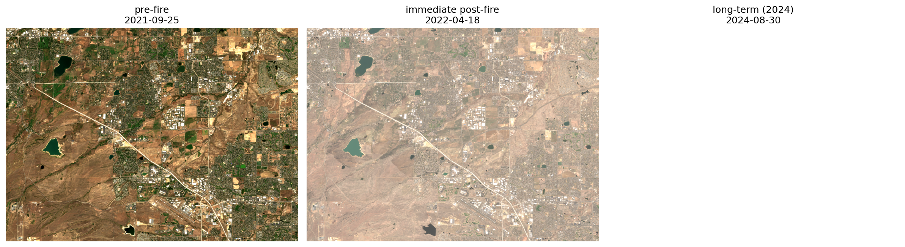
The clean date triple that finally worked: Dec 4, 2021 (pre-fire) · Mar 14, 2022 (immediate post-fire, visible darker burn scar left-of-center along the highway) · Jun 6, 2024 (long-term).
r = −0.06
dNBR vs. embedding shift, pre → immediate post-fire
r = −0.01
dNBR vs. embedding shift, pre → 2024 long-term
With the confounds actually gone, the answer is a real negative, not a shrug: embedding
shift shows no relationship with independently-measured burn severity, at
either time offset. This is a stronger and more useful result than the first entry's
inconclusive one — it's not "the signal faded by 2024," it's "a whole-chip,
mean-pooled embedding doesn't track dNBR-scale burn severity even immediately after the
fire, in this sample." The most likely reason: this study pools each 2.24km chip's patch
tokens into a single mean vector (Methodology, all notebooks), which would dilute a burn
signal that only covers part of a chip's footprint. It's also possible Clay's explicit
time-conditioning input shifts embeddings by date somewhat independent of pixel content
— every chip, burned or not, shows a large baseline shift (dNBR near zero still
pairs with embedding shift around 0.6–0.9) — which would add noise that a
49-chip sample isn't large enough to see through. Worth testing directly: embed the same
pixels twice with only the date metadata changed, to see how much shift that alone
produces.
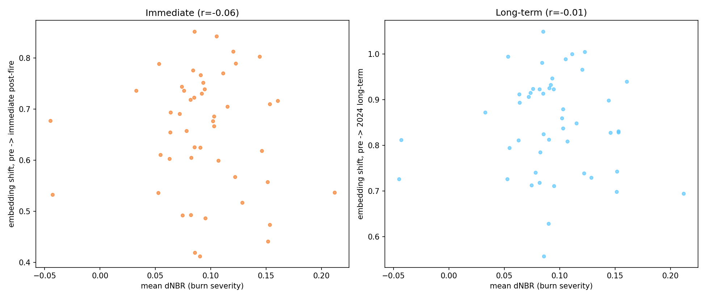
dNBR (independently-measured burn severity) against embedding shift, for the immediate post-fire comparison (left) and the 2024 long-term comparison (right). Flat in both — no visible trend.
Aug 2026
Seasonal stability, and a direct answer to the previous entry's open question
The fire study left something unresolved: chips with essentially zero burn severity still
showed a large embedding shift between dates, and it wasn't clear how much of that was
real seasonal content change versus Clay's own time-conditioning input reacting to the
date label regardless of pixel content. This entry fetches a winter mosaic
(Dec 2023–Feb 2024) over the same 725-chip AOI and grid as the main study,
embeds it, and tests both questions directly — reusing
docs/data/embeddings.bin as the summer baseline, no re-embedding needed.
0.159
mean seasonal shift across all 725 chips (std 0.079)
r = 0.55
shift vs. elevation
r = 0.42
shift vs. NDVI
Forest clusters are by far the most seasonally volatile: cluster 4 (shift 0.300) and
cluster 1 (0.286) — both confirmed tree-cover-dominant in the first entry —
sit roughly double the AOI-wide mean. The most stable cluster is grassland
(cluster 5, 0.096), not built-up as expected going in: pure built-up (cluster 6) actually
lands mid-pack at 0.170, a little above the overall mean. A plausible read: Front Range
grassland is already fairly brown and dry most of the year in this semi-arid climate, so
it has less of a "green-to-brown" swing to make, while dense urban chips still carry
enough street trees and low winter sun angles (long shadows in a way summer's high sun
never produces) to shift more than raw intuition would suggest.
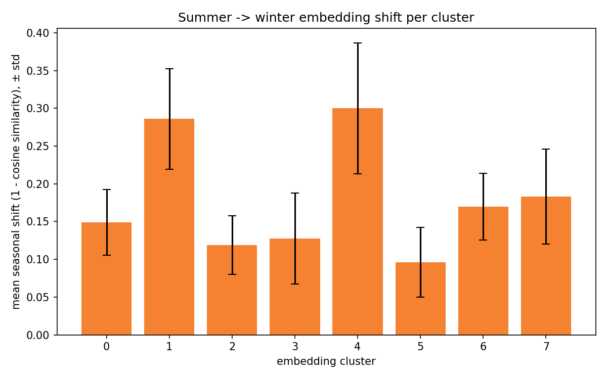
Mean summer→winter embedding shift per cluster. Tree-cover clusters (1, 4) move roughly 2–3× as much as grassland (5), the most stable cluster measured.
Elevation and NDVI both correlate positively with shift (r = 0.55 and r = 0.42), and
together with the cluster pattern above, the story lines up: this is a snow-line effect.
Higher, more forested chips get buried in snow and change dramatically in appearance;
low-elevation grassland barely does.
4%
date-metadata-only shift, as a share of the real total shift
The ablation answers the previous entry's question cleanly. Re-embedding 30 winter chips
with their real winter date gives a real total shift of 0.170 on average against the
summer baseline. Re-embedding the same pixels with a fake summer date instead of
the real winter one produces a shift of only 0.007 — 4% of the real figure, and flat
across the entire sample regardless of how large the real shift was for that chip
(Figure below). Clay's embeddings move because of what's actually in the image, not
because of what date it's told the image is from. That's a meaningfully more solid
foundation for every "embedding shift" claim made anywhere else in this project —
including the fire study two entries back, whose unusually large baseline shift (0.6–0.9
for chips with essentially no burn) now looks less like a metadata artifact and more like
it belongs to that specific small AOI or that particular date pair, not a general property
of Clay's conditioning. Worth another look, but not urgent.
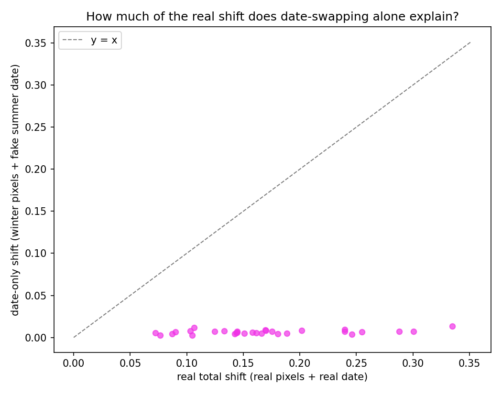
Real total shift (x-axis) against date-metadata-only shift (y-axis, same pixels, fake date) for 30 sampled chips. Every point sits far below the y=x line — date-swapping alone barely moves the embedding no matter how much the real comparison does.
Aug 2026
Does any of this generalize past the Front Range?
Every finding so far comes from one semi-arid Colorado landscape where elevation, land
cover, and development are all confounded with each other — exactly the limitation
the elevation entry couldn't fully resolve on its own. This entry re-runs the whole
pipeline (fetch, chip, embed, PCA, cluster-vs-WorldCover, elevation correlation) on
Seattle/Puget Sound, WA: marine climate, year-round evergreen forest, real open water at
scale, and a much smaller elevation range within the AOI (0–329m vs. the Front
Range's 1,455–3,253m).
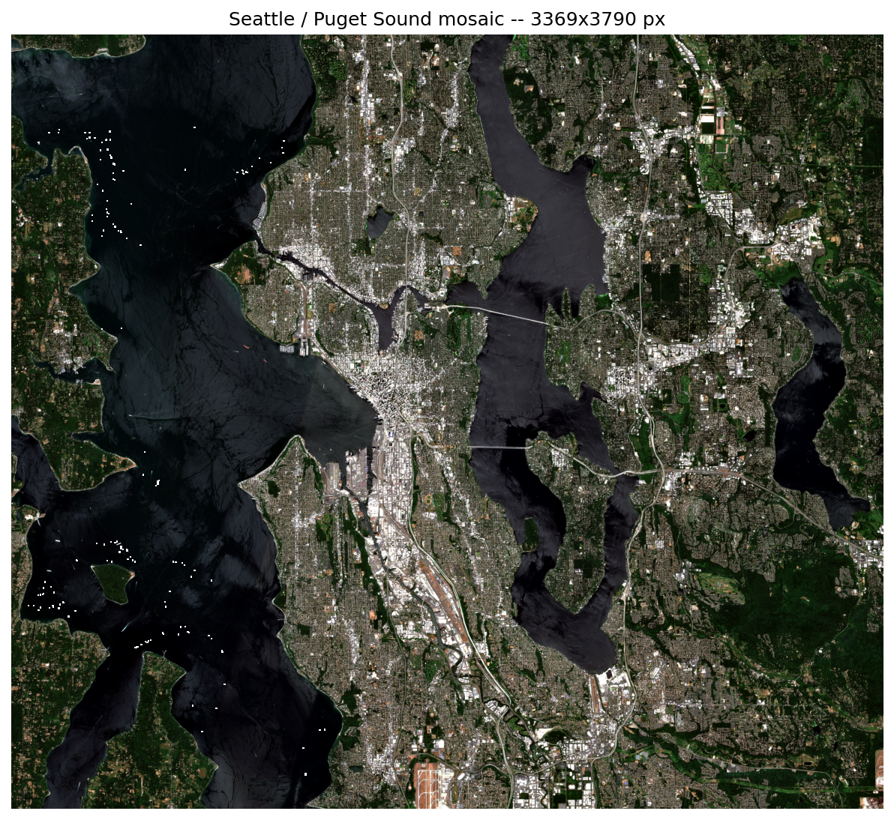
The Seattle study area: Puget Sound (upper left), Lake Washington (right), downtown Seattle and Bellevue, forested surroundings. 240 chips survived the nodata filter, versus 725 for the Front Range.
0.250
Adjusted Rand Index vs. WorldCover (Front Range: 0.275)
84.8%
PC1 variance explained (Front Range: 59.4%)
r = 0.92
Seattle PC1 vs. NDWI (water) — its strongest correlate by far
The headline: overall structure quality transfers almost exactly (ARI 0.250 vs.
0.275), but the dominant axis's character completely changes. In Colorado, PC1
turned out to be more fundamentally about terrain than development (Entry 2). In Seattle,
PC1 is even more concentrated (84.8% of variance, versus 59.4%) and is overwhelmingly a
water axis — r = 0.92 with NDWI, dwarfing its correlation with NDVI
(−0.88) or NDBI (0.66). That's the single strongest index correlation measured
anywhere in this project. Elevation still correlates moderately (r = −0.68, against
−0.82 in Colorado) despite a relief range 82% smaller — though here that's
likely substantially a water-versus-land proxy (water sits at 0m, everything else doesn't)
rather than the smooth mountains-to-plains gradient driving Colorado's number. Put simply:
PC1 isn't a fixed "elevation axis" or "water axis" baked into the model — PCA finds
whichever single contrast dominates variance in this specific landscape, and that
changes with the landscape. Terrain in a landscape defined by a mountain range, water in a
landscape defined by a sound and a lake.
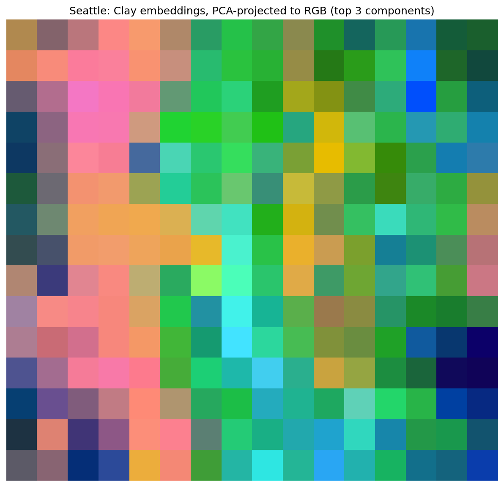
Seattle chips colored by PCA-projected embedding, same method as the Front Range map. Blue tones track open water (Puget Sound, upper left; Lake Washington, right), green tracks forest, warm tones track the urban core — visibly different color logic from the Colorado map, built from the same three-line PCA recipe.
The clustering result closes a loop from two entries back: the Front Range never grew a
dedicated water cluster because it barely had any water (one small reservoir). Seattle,
with Puget Sound and Lake Washington actually in frame, produced three
water-dominant clusters out of eight, alongside a tree-cover cluster even more concentrated
than Colorado's (44 chips, essentially none of any other class). That was a data-scarcity
limitation, not a limitation of the method.
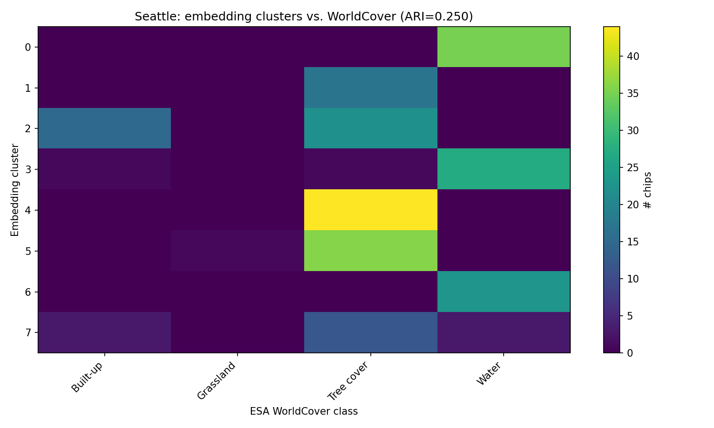
Seattle embedding clusters vs. ESA WorldCover class (ARI = 0.250). Three clusters (0, 3, 6) are water-dominant; cluster 4 is an almost-pure tree-cover cluster of 44 chips. Only four WorldCover classes appear at all in this AOI, versus six in the Front Range — no meaningful cropland or bare ground in a Seattle metro box.
Net read: this project's core claims hold up somewhere structurally different —
real, independently-verifiable structure (ARI in the same range, clean cluster-to-class
agreement) — while the specific story about what any one component means
was always going to be landscape-relative, and now there's direct evidence of that rather
than just the honest caveat notebook 04 could offer on its own.
Aug 2026
Does the fire signal survive if we stop averaging it away?
The Marshall Fire entry's clean negative (r = −0.06 / −0.01, dNBR vs.
whole-chip embedding shift) came with a leading suspect: mean-pooling a 2.24km chip's
~700 patch tokens into one vector should dilute a burn scar that only covers part of the
chip — the same way one burnt strawberry doesn't make a blended smoothie taste
burnt. That's testable directly. Clay's encoder already computes a token per spatial
patch before the mean-pool happens, so a new
encode_batch_patches()
returns those tokens unpooled, and this entry reruns the exact same AOI, dates, and dNBR
as the fire entry — but correlates burn severity against embedding shift per patch
instead of per chip.
r = −0.061
reproduced chip-level baseline, pre → immediate (orig. −0.06)
r = −0.021
reproduced chip-level baseline, pre → 2024 (orig. −0.01)
First check: rerunning this from scratch landed on 48 chips (49 in the original entry,
an immaterial one-chip difference) with r-values within 0.01 of the fire entry's numbers
— confirmation this rerun found equivalent scenes and dNBR, so the patch-level test
below is a fair comparison against the original result, not an artifact of a different
setup.
r = −0.030
patch-level, pre → immediate (n = 9,408 patches, p = 0.004)
r = −0.002
patch-level, pre → 2024 (n = 9,408, p = 0.83)
The dilution hypothesis doesn't survive contact with the data. Patch-level correlation
isn't meaningfully stronger than the chip-level baseline — if anything it's
weaker in magnitude (−0.03 vs. −0.06), and the one nominally
significant p-value is a sample-size artifact (n = 9,408 patches will flag almost any
non-zero slope as "significant"), not a meaningful effect. The most-burned chip in the
AOI makes this visually unambiguous: its dNBR map has an obvious hotspot exactly where
the fire burned, but its patch-level embedding-shift map looks like unstructured noise
with no relationship to it at all.
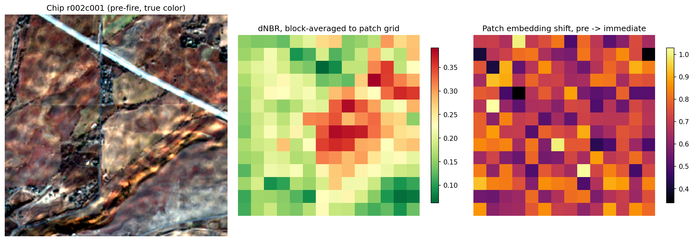
The single most-burned chip in the AOI. Left: true color, pre-fire. Middle: dNBR block-averaged to the patch grid — the burn scar is obvious. Right: patch-level embedding shift, same grid — no visible correspondence to the burn at all.
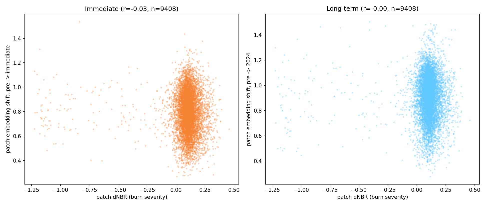
Every patch across all 48 chips, dNBR vs. embedding shift. A dense, flat cloud — no trend, immediate or long-term.
A secondary, geometry-light check told a different and genuinely surprising story. Rather
than trusting that patch tokens line up with the pixel grid in simple row-major order,
this just asks: within each chip, does its single most-shifted patch track that
chip's overall dNBR any better than the chip average did?
r = −0.554
max-patch shift vs. chip dNBR, pre → immediate (n = 48, p < 0.0001)
r = −0.520
max-patch shift vs. chip dNBR, pre → 2024 (n = 48, p = 0.0002)
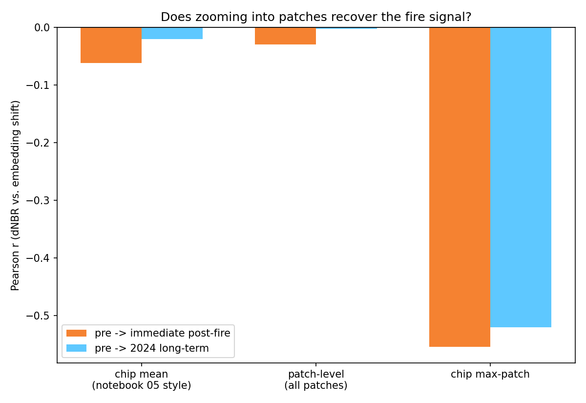
All three tests side by side. Chip-level and patch-level both sit near zero; max-patch is the one result with real magnitude — and it's negative.
That's a strong, highly significant correlation — and it runs backwards from what
"Clay detects the fire" would predict: chips that burned more severely tend to
have a smaller maximum patch shift, not a larger one. Whatever's driving this,
it isn't the fire. One plausible read: heavily-burned chips may end up more spectrally
uniform after the fire (a burned area looks like a burned area everywhere within it), so
no single patch stands out from its neighbors, while low-dNBR chips keep whatever
naturally heterogeneous land cover they had — a stray patch of snow, water, or a
land-cover edge — capable of producing one big, fire-irrelevant patch-level swing between
a fall and a winter date. That's a real hypothesis this entry raises but doesn't test;
left as an open question rather than dressed up as a finding.
Net result: dilution was the wrong explanation. Averaging wasn't hiding a real signal
— at both chip and patch resolution, Clay's embeddings simply don't track this
fire's burn severity in this sample. The one place a strong correlation did show up runs
in the opposite direction from a burn signal and remains unexplained, which is a more
honest place to leave this than forcing a tidy resolution the data doesn't support.
Aug 2026
Do the vector-arithmetic anchors hold up when you actually look at them?
The embedding-arithmetic entry's anchors were never inspected: "urban" and "vegetation"
were the mean of an entire k-means cluster, and "water" was a single chip picked
by nearest-centroid distance to Boulder Reservoir, with no check that any of the three
actually looked like what they were supposed to represent. This entry fetches real Esri
World Imagery tiles directly (bypassing the live map's WebGL renderer, which doesn't
composite reliably in this project's automated environment) for the strongest candidates
in each concept, and rebuilds all three anchors from chips individually confirmed to be
dominated by their concept before rerunning the same arithmetic test.
Two things turned up immediately. First, one strong "urban" candidate — low NDVI,
inside the validated Built-up cluster — turned out to have Sloan's Lake covering
roughly a third of it once actually looked at. Second, and more fundamental: the original
water anchor (nearest chip to Boulder Reservoir) is mostly farmland and suburb with only a
sliver of the reservoir visible — and checking every plausible water-adjacent
candidate in the AOI, no chip in this 725-chip grid is actually majority open
water. That's consistent with the first entry's original note that water chips
were too sparse to form their own cluster, but this is the first time it's been checked
directly rather than inferred.
0.123
original gap (0.951 top-1 vs. 0.828 baseline)
0.189
verified-anchor gap (0.945 top-1 vs. 0.756 baseline)
Rebuilding "urban" and "vegetation" from four visually-confirmed pure chips each, and
"water" from the four least-bad available chips (still not majority water, but
honestly labeled as such rather than pretending otherwise), widened the compositionality
gap by roughly half. The top match itself and the baseline both dropped a bit (0.945 vs.
0.951; 0.756 vs. 0.828), but the gap between them — the actual measure of whether the
arithmetic is doing something specific rather than landing close to everything — grew
from 0.123 to 0.189. Anchor construction quality was a real, fixable part of what was
holding the original test back, on top of the nonlinear-encoder ceiling already discussed
in the paper. Full detail, including which candidate chips were checked and dropped, in
analysis/embedding_arithmetic_verified_anchors.js.
Aug 2026
Chasing the fire anomaly further: mostly no, except for one very telling lake
Two entries back, the strongest single result was also the strangest: a chip's single
most-shifted patch correlated negatively with how severely that chip burned
(r = −0.55) — backwards from a burn signal. The standing guess was snow or
cloud-shadow contamination in an unrelated patch. Sentinel-2's Scene Classification Layer
gives a per-pixel cloud/shadow/snow flag independent of both Clay and dNBR, so a
diagnostic appended to that notebook checked directly: does each chip's max-shifted patch
have an unusually high fraction of SCL-flagged pixels that changed classification between
the pre-fire and immediate-post-fire dates?
0.001
SCL-changed fraction at the max-shift patch
0.002
SCL-changed fraction at a typical patch, same chip
The most direct comparison actually runs backwards from the hypothesis: the max-shift
patch is, if anything, less SCL-flagged than a typical patch in the same chip, not
more. Taken alone, that would be a clean rejection. But it isn't the whole story —
across the 48 chips, the correlations are modest but real, and in the direction the
hypothesis predicted:
r = −0.33
SCL-changed fraction vs. dNBR (p = 0.02)
r = 0.36
SCL-changed fraction vs. the max-patch shift itself (p = 0.01)
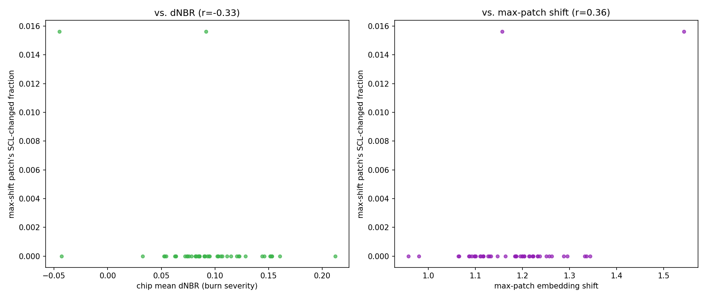
Max-shift patch's SCL-changed pixel fraction against chip dNBR (left) and against the shift itself (right). Nearly every chip sits at zero — two outliers are doing almost all the work.
Real, but small — nowhere near enough on its own to explain the original r =
−0.55. The visual check resolves why: the single chip with the largest max-patch
shift in the entire sample (1.544, more than double the next-highest) is centered on a
lake that's open dark water in the pre-fire true-color image and visibly frozen
over in the immediate-post-fire image — an obviously large, obviously
fire-irrelevant seasonal change. Sentinel-2's automated classifier apparently still called
the icy lake surface "water" in both dates rather than flagging it as changed, which is
exactly why the numeric SCL test undercounts this specific failure mode even though the
underlying mechanism (unrelated seasonal content elsewhere in the chip) is right there to
see.
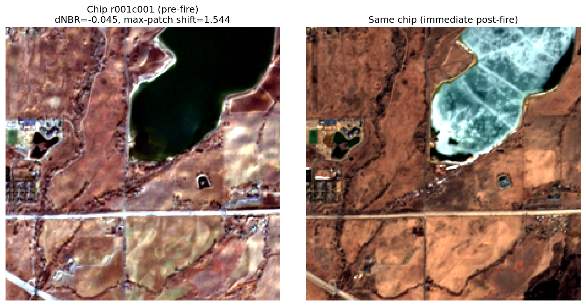
The chip with the single largest max-patch shift measured anywhere in this project. Left: pre-fire (Dec 2021), open water. Right: the same chip, immediate post-fire (Mar 2022) — the lake has frozen over. dNBR here is −0.045: essentially no burn at all.
Net result: not a clean resolution, and better left that way than forced into one.
Non-fire seasonal content is clearly part of what's driving the anomaly — concretely
demonstrated for at least this one chip — but SCL's cloud/snow classes aren't a
complete proxy for "something unrelated changed here," so most of the r = −0.55
still isn't explained by this test. The honest state of this question: real evidence
against a fire explanation, a confirmed example of the general mechanism, and no full
accounting yet for the rest of the correlation.
Aug 2026
Does a second season help, or just make the strongest axis stronger?
The very first entry's honest miss was cropland and grassland bleeding across several
clusters instead of separating cleanly, with a standing explanation: those two classes
differ mainly in phenology (crop calendar, irrigation timing), which one mid-summer
snapshot can't see. That's been the paper's stated future work ever since. This entry
finally tests it: re-embed the full 725-chip grid for a winter mosaic, concatenate each
chip's summer and winter vectors into a 2048-dim composite, and recluster — checked
against the exact already-committed single-season cluster labels for a controlled
before/after comparison, not a fresh unrelated re-run.
0.275 → 0.347
Adjusted Rand Index vs. WorldCover, single-season → composite
The headline number moved the right way, and by a real amount — a jump like that
isn't noise. If the story ended there, this would read as confirmation. It doesn't end
there.
Modal-cluster purity (fraction of a class's chips landing in its single most common cluster) for the two classes the phenology hypothesis specifically targeted. Both got worse with the composite, not better.
The two classes this test was actually about got less cleanly separated, not more
— cropland's drop (−0.272) is the larger of two real, unambiguous declines. The
phenology hypothesis, stated as future work since the very first entry, doesn't hold up:
adding a second season didn't give clustering the missing signal to tell cropland from
grassland. Something else is responsible for the overall ARI gain.
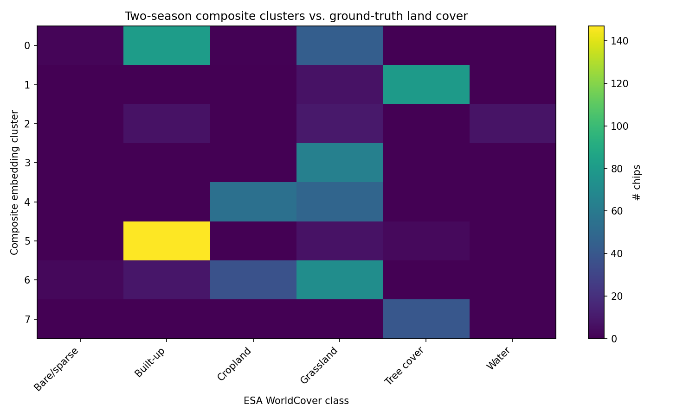
Two-season composite clusters vs. WorldCover. Built-up and Tree cover are as clean as ever (or cleaner); Cropland and Grassland now split across two substantially mixed clusters instead of concentrating in one.
The likely explanation ties back to two earlier entries rather than anything new: PC1 was
already shown to be more fundamentally a terrain axis than a development axis (elevation
r = −0.82), and forest was already shown to be roughly 2–3× more
seasonally volatile than grassland (the seasonal-stability entry, a clean snow-line
effect). A winter mosaic most likely amplifies that same dominant terrain/snow contrast
— sharpening whatever was already easy to separate (Built-up, Tree cover) —
rather than contributing an orthogonal, phenology-specific signal that would actually help
distinguish two classes that already look similar on that dominant axis. The composite
embedding is measurably better overall and measurably worse at the one specific thing it
was built to test — both real, and worth sitting with rather than smoothing over.